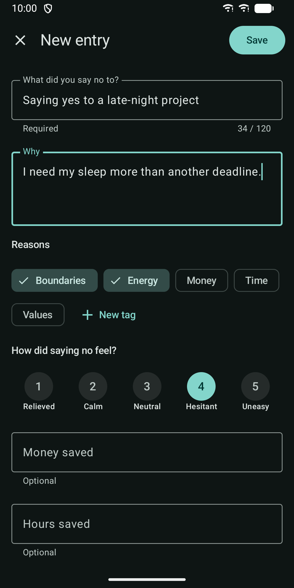

Anti-Bucket List: No Journal
Write down what you said no to and check later if you're still glad.




About
Every "no" protects a "yes". Anti-Bucket List is a private journal for your deliberate declines: the invitation you turned down, the upgrade you skipped, the extra project you didn't take on. Write down what you said no to and why, then check back later to see if you are still glad you did. WRITE IT DOWN IN SECONDS - What you declined and why, in your own words - Reason tags: Time, Money, Energy, Values and Boundaries, plus tags of your own - How saying no felt, on a scale from relieved to uneasy - The date you decided - Optional money saved and hours saved "STILL GLAD?" CHECK-INS After 30 and 90 days, a reminder asks how you feel now: still glad, unsure, or regret it. Add a short note if you like. Over time you see which kinds of no serve you well. If notifications are off, due check-ins also show at the top of your journal. YOUR JOURNAL - Search the titles and reasons you wrote - Filter by tag - Filter by check-in result: pending, due, glad, unsure or regret - Open any entry to see its full reason and its check-in history STATS - Total no's, money saved and hours saved - No's per tag - Your check-in results as glad, unsure and regret HOME-SCREEN WIDGET See this month's no's and what you saved, and add a new entry with one tap. BACKUP AND RESTORE Save your journal to a JSON file in a place you choose, and restore it later. The file is not encrypted, and the app warns you before every backup. PRIVATE BY DESIGN - No account and no sign-up - No analytics and no advertising - The app has no internet permission. Your journal stays on your phone. - Excluded from Android cloud backup and device transfer PRO FEATURES Everything described above works without a purchase and has no limits. Pro is an optional one-time purchase through Google Play, not a subscription. It adds: - App lock with fingerprint, face or device PIN. It also hides the widget numbers and notification text. - Advanced stats: no's per month for the last 12 months, regret rate per tag, and money and hours saved per tag - CSV export for spreadsheets Made for people working on boundaries, minimalism or better decisions, and for anyone who wants a record that saying no was the right call. Works on phones and tablets, in light and dark mode, with screen reader support.
Guides
- How to Keep a Journal of Things You Said No To A step-by-step way to record what you declined, why it felt that way, and when to review it. Includes a 30 and 90 day check-in schedule.
- Regret Rate Calculator: How Often Do You Regret No? Work out your regret rate for the things you declined. Formula, a worked example and a small calculator you can use right here.